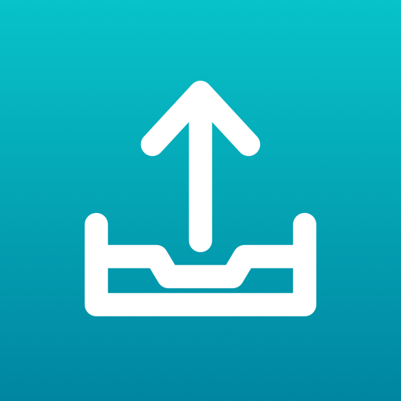

团队文件中转站：手机、Mac 上随手把图片和文件传到服务器上自己的空间，每次上传都有记录，点一下复制文件在服务器上的路径。
iPhone 和安卓可以在相册、文件或任何 App 里「分享 → Shelf」；Mac 上直接把文件拖进窗口或 ⌘V。
注册要邀请码，找管理员要。
需要 iOS 18 以上。这是 Ad Hoc 包，只能装在开发者后台登记过的 iPhone 上；装不上就把设备登记一下再重新打包。以后 App 里会提示更新。
xattr -dr com.apple.quarantine /Applications/Shelf.app && open /Applications/Shelf.app或者先双击打开一次，被拦后去「系统设置 → 隐私与安全性」点「仍要打开」。需要 macOS 15 以上。更新时重新下载覆盖即可。
需要 Windows 10 / 11（64 位）。关窗口会藏到右下角托盘，从托盘菜单「退出」才真的退出。命令行也能传：Shelf.exe upload 文件。更新时重新下载覆盖 Shelf.exe。
tar xzf shelf-linux-*.tar.gz && cd shelf-linux-* && ./install.sh装在自己的目录下，不用 sudo：命令行 shelf、应用菜单里的 Shelf 窗口、文件管理器（Nautilus / Dolphin）右键「上传到 Shelf」。
窗口需要 Ubuntu 24.04 / Debian 13 / Fedora 40 以上（GTK 4.14、libadwaita 1.5）；没有桌面的服务器也能用命令行：shelf login、shelf upload 文件。卸载：./uninstall.sh。
需要 Android 8 以上。更新时重新下载安装，会直接覆盖，登录状态还在。
发布于 2026-09-26 11:56
安装包托管在 GitHub Releases